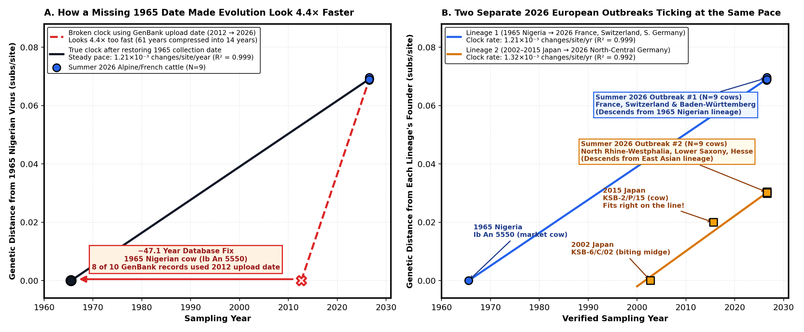
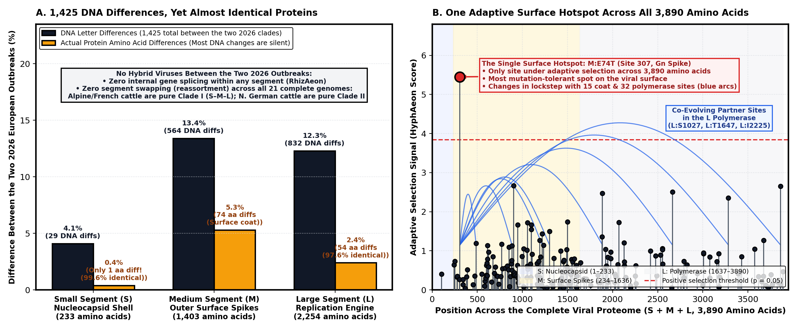

What is Shamonda virus, and what does it do in cattle?
Carried by tiny blood-feeding biting midges (Culicoides), Shamonda virus is a three-segmented RNA virus in the Simbu group—closely related to Schmallenberg and Akabane viruses:
In adult cows, infection causes only a brief fever, diarrhea, or a few days of lower milk yield before the virus is cleared.
When midges bite pregnant cows, sheep, or goats in early-to-mid gestation, the virus attacks the fetal brain and spinal cord, causing abortions or deformed calves.
Small ($S$) builds the inner protein shell, Medium ($M$) builds the outer surface spikes, and Large ($L$) builds the replication enzyme.
Where do all 97 public sequences (34 unique isolates) come from?
Tracing all 97 public genetic records back to their original field samples shows they come from 34 animal and insect isolates (26 cattle, 6 biting midges, 1 horse, and 1 goat; zero human cases) across three continents:
First isolated by Otto Causey & Graham Kemp from trade cow Ib An 5550 at the Shamonda cattle market in Ibadan, Nigeria (Causey et al., 1972).
Detected in midges and cattle in southern Japan (2002, 2007, 2015, 2023), cattle in Israel (2018–2021), and a horse and goat in South Africa (2018, 2021).
In July–August 2026, labs in France, Switzerland, and Germany sequenced 18 complete three-segment genomes (54 segments) from sick cattle.
Restoring the 1965 Nigerian date reveals a steady clock—and two separate branches

Ib An 5550) back in 1965 rather than its 2012 re-sequencing date removes a $4.4\times$ clock distortion. Right: Across all verified isolates, ChronAeon resolves two parallel lineages evolving at $1.21 \times 10^{-3}$ and $1.32 \times 10^{-3}$ substitutions/site/year (~14 changes/year across the genome).
Europe was hit by two long-separated branches of Shamonda virus in the same summer
The 18 cattle genomes sequenced across Europe in July and August 2026 split into two distinct geographic and evolutionary groups separated by 1,425 DNA letter differences:
Regions: Eastern/central France, Switzerland (Luzern, Thurgau), and southwestern Germany (Baden-Württemberg).
Ancestry: Descends directly from the lineage first sampled in the 1965 Nigerian market cow ($98.6\%$ polymerase protein identity).
Regions: North Rhine-Westphalia, Lower Saxony, and Hesse.
Ancestry: Belongs to the 2002–2015 Japanese midge and cattle lineage ($99.6\%$ polymerase protein identity to 2002 Japanese isolates).
No hybrid viruses, an almost frozen core, and a single adaptive hotspot on the outer spike

RhizAeon shows neither 2026 outbreak is a segment-swapped hybrid, and cycling between insects and cattle keeps the internal proteins $97.6\text{–}99.6\%$ identical despite 1,425 DNA differences. Right: Across all 3,890 amino acids, HyphAeon finds just one adaptive hotspot—position 74 on the Gn outer surface spike (red circle)—evolving with partner sites in the coat and polymerase (blue arcs).
The 61-year evolutionary story of Shamonda virus in one glance
Anchored to the 1965 Nigerian cow and 2002 Japanese midges, both branches evolve at a steady $1.2\text{–}1.3 \times 10^{-3}\text{ subs/site/yr}$ (ChronAeon).
Despite co-circulating in Europe in summer 2026, the Alpine/French and northern German clades have not swapped segments (RhizAeon).
Alternating between midges and cattle preserves $99.6\%$ of the inner shell and $97.6\%$ of the polymerase, focusing change on the outer spike (HyphAeon).